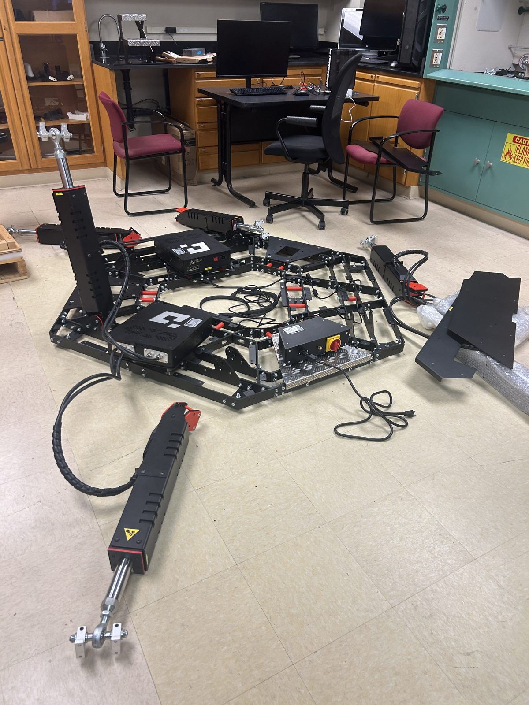
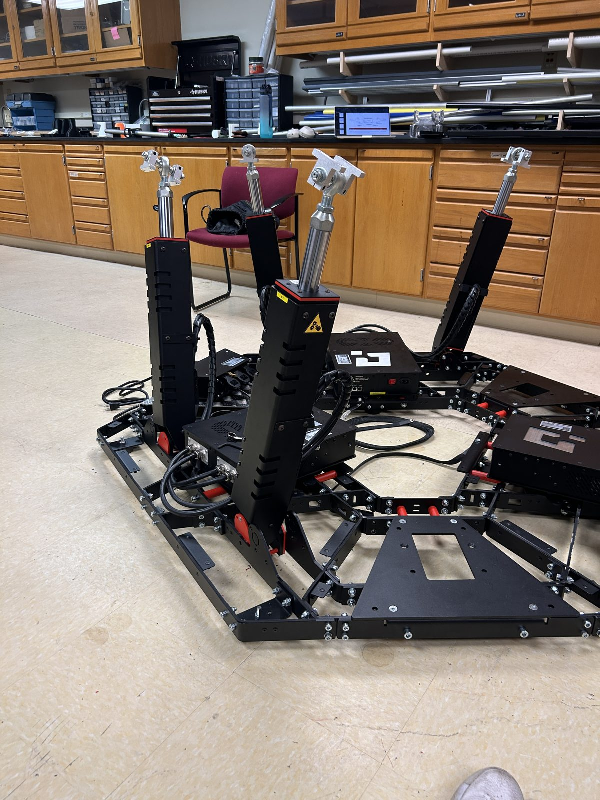
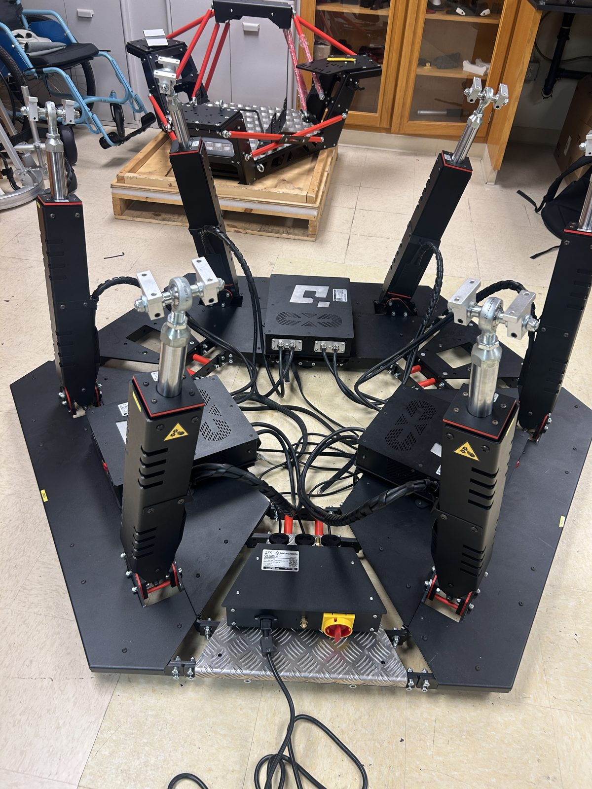
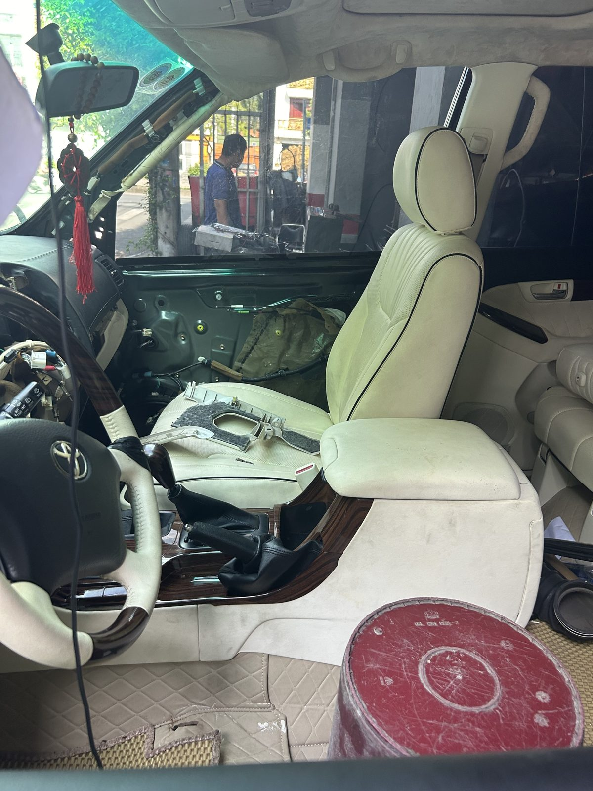
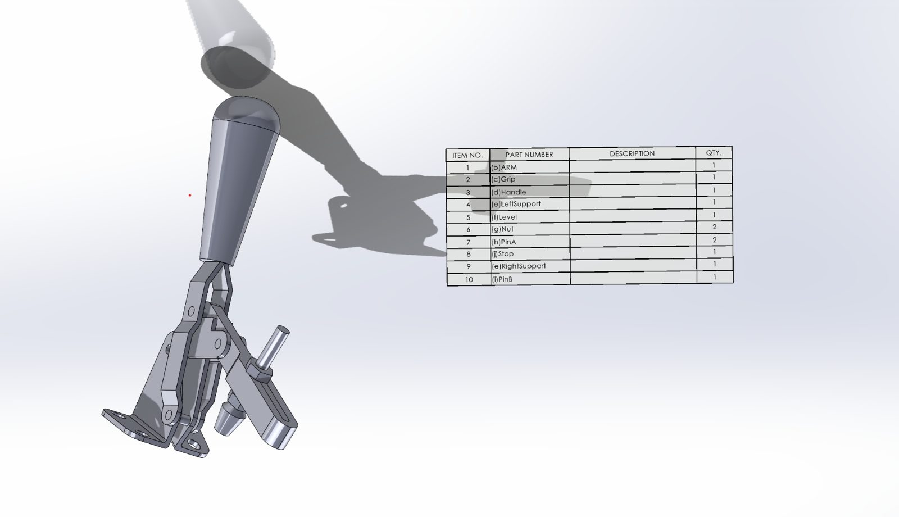

Driver Rehabilitation Research
Lead undergraduate researcher, LMU Human Rehabilitation Lab, Mar 2025 to Feb 2026
The Problem
Traditional fixed-base driving simulators used in driver rehabilitation often lack motion feedback, which limits the realism of the driving experience and undermines the patient's vestibular and somatosensory systems. This restricts their effectiveness in retraining individuals such as older adults or those recovering from stroke or traumatic brain injury who have lost the ability to drive safely and independently. Without motion cues, these simulators place greater cognitive demand on users, reducing their ability to perform complex driving tasks.
What I did
Led the mechanical assembly of the QS-S25 six degree of freedom motion simulator, using an engine hoist, torque wrenches, and alignment gauges. I wrote standard work documentation and designed modular mounts so the build could be repeated.
Integrated motion feedback into the simulator loop, and designed a custom throttle pedal in SolidWorks with haptic sensors, repurposed from a real car pedal.


Build progress
The QS-S25 going together, from actuators laid out on the floor to the assembled platform. Below that, the throttle pedal: taken from a real car and modeled in SolidWorks.





The Result
- Assembly time cut 29%, from 12 to 8.5 hours, through standard work and modular mounts.
- Logged driver response time improved 43% across multiple sessions with motion feedback.
- The custom throttle pedal scored 85% realism in a patient survey.